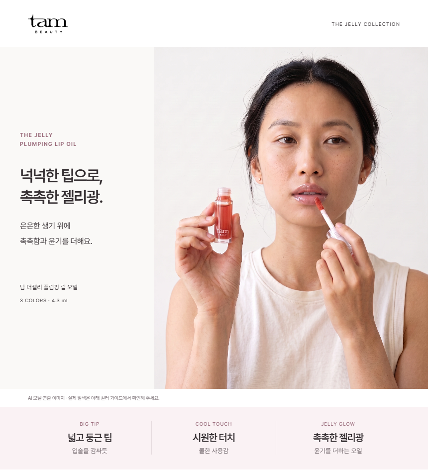
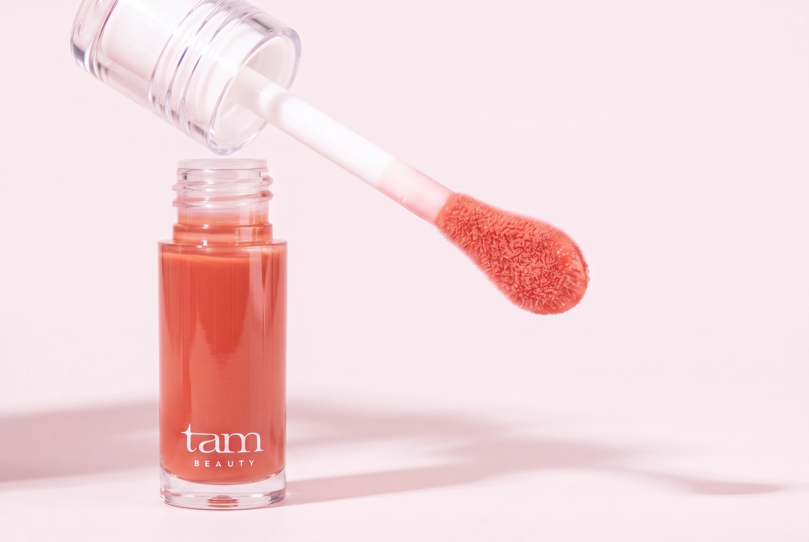

같은 얼굴보다, 같은 캠페인의 분위기.
담백한 인상의 새 모델이 제품을 바르는 장면을 중심으로 구성했습니다.
밝은 뉴트럴 배경과 제품의 핑크를 연결하고, 넓은 팁·쿨한 사용감·촉촉한 윤기를 순서대로 설명합니다.
메인과 제품컷을 한 화면에서 확인



립오일을 바를 이유부터
전달 순서
- 촉촉함과 윤기를 더하는 일상적인 사용 장면
- 넓은 면과 둥근 끝으로 펴 바르는 큰 팁
- 쿨링감과 오일광, 두 가지 오일 함유
- 세 가지 실제 발색 비교
- 단독 사용과 립 컬러 위 마무리
- 컬렉션과 제품 정보
사진별 역할
모델과 세 장의 제품 캠페인 컷은 AI 연출입니다. 색상 선택은 공식 제품·발색 사진을 기준으로 안내합니다.
큰 팁의 실제 형태와 실제 제형 사진도 함께 보여줍니다. 성분은 해바라기씨오일·녹차씨오일 함유에 한정하고, 수치·지속시간·독점 기능은 추가하지 않았습니다.
타 브랜드와 비교해 반영한 점
기존에 수집한 공식 상세 이미지로 재비교했습니다. 힌스·딘토의 글로스와 라네즈 립세럼은 인접 카테고리의 표현 참고입니다.
| 레퍼런스 | 관찰한 강점 | 탐에 적용 |
|---|---|---|
| 힌스 미러 듀 글로스 | 모델·제품·팁의 크기를 달리해 시선 전환 | 모델 사용 장면 다음에 넓은 팁 확대. 실제 팁 사진을 설명과 짝지음. |
| 딘토 미러리스 립글로스 | 모델·제품·제형의 색을 하나의 캠페인으로 연결 | 브론즈 메이크업과 짙은 색면을 덜고, 흰 배경과 로즈 포인트로 연결. |
| 라네즈 글레이즈 크레이즈 | 제형의 두께·반사광으로 사용감을 시각화 | 젤리광 연출과 실제 제형을 함께 배치. 식품 소품이나 타사 효능은 차용하지 않음. |
앞선 기획 단계의 3회 비교 기록은 유지했습니다. 이번 수정에서는 메인 구도, 페이지 연결, 최종 화면의 세 단계로 다시 확인했습니다. 올리브영 페이지를 새로 열람했다고 주장하지 않습니다.
클로드 교차검토와 반영
모델의 밝은 톤과 자연스러운 피부 질감은 유지하고, 입술의 윤기 보완본을 선택했습니다. 원본과 보완본을 확대해서 얼굴·손·제품 형태를 확인했습니다.
- 반영: 모델과 팁 연출 속 액상 색을 공식 로즈 제품에 가깝게 조정. 사진 구도와 밝은 조명은 유지.
- 반영: 모바일 실제 발색 사진을 95px에서 최대 240px로 확대. 부제도 읽기 쉬운 별도 행으로 이동.
- 반영: THE JELLY / PLUMPING 사이 공백 수정. 실제 팁 사진의 표시 폭을 제한.
- 유지: 공식 팁 사진의 배경 무늬는 원본에 포함된 요소입니다. 새로 만든 결함으로 판단하지 않았으며, 원본 480px보다 작은 크기로 표시합니다.
- 미반영: AI 모델 사진을 특정 호수의 실제 발색처럼 표기하지 않았습니다. 공식 상품고시의 ‘인피닛 로즈’ 표기도 출처에 따라 유지했습니다.
AI 캠페인 컷은 실제 제품 사진과 완전히 일치하는 색상 증거가 아닙니다. 실제 제품·발색·제형은 공식 원본을 유지하고 역할을 구분했습니다.
검토 원문 보기
**결론.** V6는 모델과 제품 컷의 광원 충돌은 해결했지만, 제품 색상·팁 형태의 일관성과 모바일 히어로 위계는 아직 미완입니다. 블로커 3건, 나머지는 선택 사항입니다. ## 1. 모델 선택 - **톤 정합성은 맞습니다.** 히어로 배경은 중성 근백색이고 광원은 카메라 좌상단 창광으로, 팁·글로우·트리오 컷의 그림자 방향과 일치합니다. 브론즈 메이크업과 금속 액세서리가 사라져 분홍 제품과 더 이상 싸우지 않습니다. 다만 히어로 배경이 제품 스틸보다 한 단계 회색빛이라 섹션 전환에서 미세하게 탁합니다. 선택 사항입니다. - **자연스러움은 충분합니다.** 모공, 잔머리, 짝눈, 잡티, 짧은 손톱, 손가락 관절이 무리 없습니다. 제가 보기에 광대 하이라이트가 약간 밀랍질이고, 입술이 건조한 매트라 "오일을 바르는 중"이라는 상황과 어긋납니다. 이는 제 관찰이지 AI 판별의 확증이 아닙니다. - **model-gloss는 채택을 권합니다.** 아랫입술 윤기가 제품 서사를 세워주고 유리 입술까지는 가지 않았습니다. 단 윗입술 경계의 흰 하이라이트 한 줄이 덧칠처럼 보이니 100% 배율로 확인하세요. 이 편집본은 입술 밖 픽셀도 화면 전체에서 바뀌어 있어 국소 편집보다 재생성에 가깝다고 추정됩니다. 피부 질감 유지 여부를 비교해야 합니다. - **B안은 팁 면이 더 잘 보이지만** 거울 소품이 흰 판처럼 떠 있고 엄지가 로고를 가립니다. A안 유지가 맞습니다. ## 2. 가장 큰 변경 3가지 1. **제품 색상과 캡을 하나로 통일. 블로커.** 같은 로즈가 히어로에서는 반투명 모브 핑크, 빅팁 컷에서는 체리 레드, 트리오에서는 코랄로 나옵니다. 공식 사진의 인피니트 로즈는 코랄 로즈입니다. 캡도 투명 리브, 백색 프로스트, 투명으로 컷마다 다릅니다. 오너가 거부한 "제품 사진과 충돌"이 광원에서는 풀렸지만 색상에서는 그대로입니다. 빅팁 컷을 공식 색으로 재생성하거나 보정하고, 캡 사양을 한 가지로 고정하세요. 2. **BIG TIP 증거 교체. 블로커.** 첫 번째 USP인데 히어로의 팁은 측면으로 잡혀 폭이 보이지 않고 일반 두 풋처럼 읽힙니다. 유일한 실제 증거인 실제 팁 사진은 원본이 작아 확대 시 누끼 격자와 계단 현상이 보입니다. 딘토 레퍼런스는 팁 섹션에 실제 팁 하나를 깨끗하게 단독으로 보여줍니다. 깨끗한 실제 팁 사진을 확보하고, 그 전까지는 원본 크기 이하로만 쓰세요. 3. **실제 입술 사진을 키우고 모바일 히어로를 다시.** 힌스·딘토 모두 광택 증거는 화면을 채우는 입술 매크로입니다. V6는 AI 젤 스미어가 가장 크고 공식 발색 사진이 가장 작습니다. 신뢰를 만드는 자산이 가장 작게 쓰인 셈입니다. 발색 사진을 카드 폭 전체로 키우거나 글로우 챕터에 공식 로즈 매크로 하나를 크게 넣으세요. 모바일 히어로는 부제가 11px로 읽히지 않고, 아이브로우 줄바꿈을 숨기면서 "THE JELLYPLUMPING"으로 붙어 출력됩니다. 후자는 블로커입니다. ## 3. 제품 묘사 위험과 카피 - **프롬프트의 "broad flat paddle face"가 실제와 다릅니다.** 실제 팁은 두툼한 스펀지 플록에 둥근 끝이지 납작한 주걱이 아닙니다. 빅팁 AI 컷의 물방울형 평면 팁은 실제보다 납작하고 뾰족합니다. - **빅팁 컷 액상의 체리 레드는** 세 컬러 어디에도 없습니다. - **히어로의 병 속 액상은** 반투명 모브로, 실제 인피니트 로즈의 불투명 코랄과 다릅니다. 어떤 색을 바르는지 표기가 없어 고객이 추정하게 됩니다. 캡션에 "02 인피니트 로즈 연출" 정도의 명시를 권합니다. - **트리오 컷 유리판 위 스미어는** 실제 제형보다 묽고 무색에 가깝습니다. 글로우 챕터의 AI 스미어와 함께 "거의 투명한 오일"이라는 인상을 누적시킵니다. - **카피에 치명적 오류는 없습니다.** 벚꽃 성분, 팁 배수, 쿨링 독보성, 지속·임상 표현이 모두 없고, 도톰함과 쿨링에 고지가 붙어 있으며 오일 2종은 함유 사실만 적었습니다. - **"여린 벚꽃 핑크"는 색 묘사지만** 벚꽃 성분이 글로스 쪽에 있는 브랜드라 혼동 여지가 있습니다. "여린 핑크"로 줄여도 손해가 없습니다. - **제품명이** 히어로와 정보 섹션에서 "탐 더젤리"와 "탐 뷰티 더 젤리"로 다르고, "인피니트"와 "인피닛"이 공존합니다. 한 곳으로 정리하세요. - **USP 인덱스에서** COOL TOUCH와 JELLY GLOW가 같은 섹션으로 링크됩니다. "시원한 터치 · 쿨한 사용감"은 동어 반복이라 구매 이유로 기능하지 않고, 쿨링은 시각 증거 없이 텍스트뿐입니다. **블로커:** 제품 색상·캡 불일치, 픽셀 깨진 실제 팁 사진, 모바일 "JELLYPLUMPING" 붙음. **선택:** 글로스 편집본 채택, 발색 사진 확대, 히어로 배경 밝기, USP 부제 카피, 제품명 통일, 앵커 중복.
일회성 비대화식 검토이며 로컬 세션 저장을 끈 상태로 실행했습니다. 검토 의견은 제작 판단의 참고 자료이고, 사용자 승인을 뜻하지 않습니다.